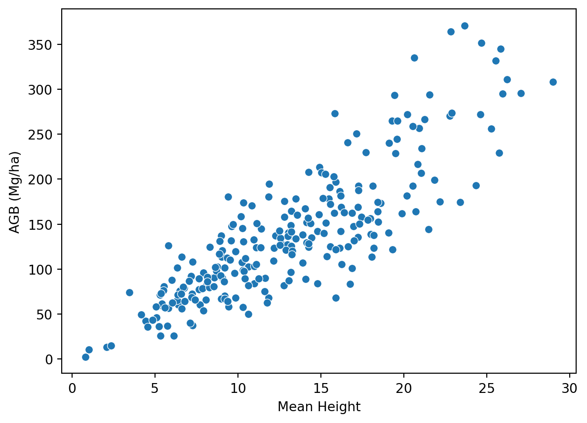

metrics_df = pd.read_csv(METRICS_FPATH)metric_names = metrics_df.drop('plot_id', axis=1).columns.tolist()df = (pd.read_csv(LABELS_FPATH) .merge(metrics_df, on="plot_id", how='left') .rename(columns={'total_agb_mg_ha': 'agb_mg_ha_obs'}) )# View relationship between mean height and biomassax = sns.scatterplot(df, y='agb_mg_ha_obs', x='zmean')ax.set(xlabel='Mean Height', ylabel='AGB (Mg/ha)')

Prepare data for RF Modelling
# Check which ALS metric cols have NAsna_counts = df.isna().sum()# Print all cols with NAsfor col, na_count in na_counts.items():if na_count >0:print(f"{col}: {na_count} NAs")# Drop rows with any NAsdf = df.dropna()df
plot_id
dom_sp_type
perc_decid
agb_mg_ha_obs
split
total_agb_z
n
zmax
zmin
zmean
...
vzsd
vzcv
OpenGapSpace
ClosedGapSpace
Euphotic
Oligophotic
kde_peaks_count
kde_peak1_elev
kde_peak1_value
HOME
0
PRF013
conif
0.000000
42.263648
train
-1.326847
19533
12.11
-0.46
4.449033
...
0.339932
86.693595
48.448852
24.437781
19.086611
8.026756
1
4.310411
0.149233
12.11
1
PRF090
mixed
52.285188
127.743892
train
-0.130919
37466
29.91
-0.50
12.639579
...
0.350017
107.110615
38.931903
43.288246
12.285448
5.494403
3
27.776575
0.009072
29.91
2
PRF015
conif
5.186690
172.347008
train
0.493109
18859
30.50
-0.75
15.571104
...
0.198087
77.504066
32.883558
49.915951
10.412975
6.787515
3
22.196184
0.062241
30.50
3
PRF146
conif
3.228891
174.069178
train
0.517204
17623
33.47
-0.34
10.340951
...
0.174707
179.575843
53.155319
36.181278
6.507298
4.156105
3
29.429452
0.043175
33.47
4
PRF208R
conif
0.000000
13.298206
train
-1.732093
20061
5.60
-0.14
2.092026
...
0.389900
76.030501
37.703165
13.280582
25.684346
23.331908
1
2.157182
0.163660
5.60
...
...
...
...
...
...
...
...
...
...
...
...
...
...
...
...
...
...
...
...
...
...
244
PRF212
conif
26.719682
141.950651
test
0.067843
17128
32.35
-0.45
16.189422
...
0.191256
76.990694
35.943012
48.303935
10.384441
5.368611
2
18.623973
0.058992
32.35
245
PRF049
mixed
66.054144
36.550006
test
-1.406785
19089
18.85
0.00
5.244531
...
0.243248
128.427960
58.916293
23.871450
10.014948
7.197309
2
13.318982
0.035563
18.85
246
PRF161
decid
98.688073
131.689708
test
-0.075714
17089
23.53
-0.16
17.017618
...
0.334060
133.360794
21.892537
62.961194
14.095522
1.050746
2
17.447084
0.134810
23.53
247
PRF199
conif
5.880717
133.009047
test
-0.057256
58565
27.82
-0.38
10.962897
...
0.192104
136.609411
40.449952
41.689097
11.096440
6.764512
3
20.052877
0.061518
27.82
248
PRF072
mixed
54.907966
65.969887
test
-0.995180
17283
21.11
-0.15
7.421538
...
0.362311
84.959235
50.054600
26.167076
13.452088
10.326235
1
7.062877
0.096511
21.11
249 rows × 102 columns
# Assign nummieric IDs to each dominant speciesdf['dom_sp_type_id'] = df['dom_sp_type'].astype('category').cat.codes# Create a dictionary mapping species names to their IDsdom_sp_dict = (df[['dom_sp_type', 'dom_sp_type_id']] .drop_duplicates() .sort_values(by='dom_sp_type_id') .set_index('dom_sp_type_id', drop=True) .to_dict()['dom_sp_type'])dom_sp_dict
# Split data into train and test sets (combine val into test since not needed as seperate for RF)train_df = df[df['split'].isin(('train', 'val'))].reset_index(drop=True)test_df = df[df['split'] =='test'].reset_index(drop=True)# Create histograms showing each dataset class distributionsfig, axes = plt.subplots(1, 2, figsize=(10, 8), sharey=True)sns.countplot(x='dom_sp_type_id', data=train_df, ax=axes[0])axes[0].set_title('Training Set Class Distribution')sns.countplot(x='dom_sp_type_id', data=test_df, ax=axes[1])axes[1].set_title('Test Set Class Distribution')plt.show()